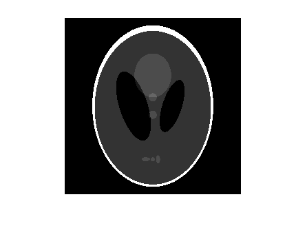
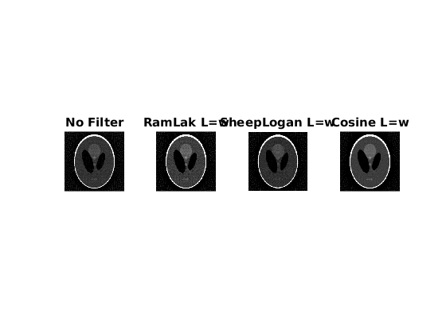
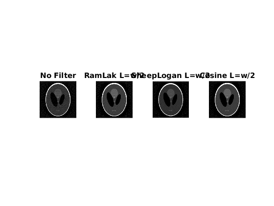
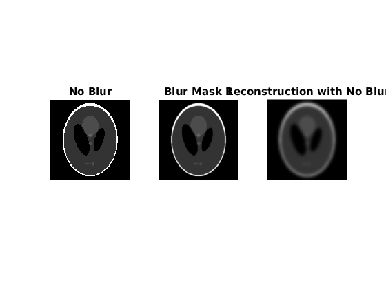
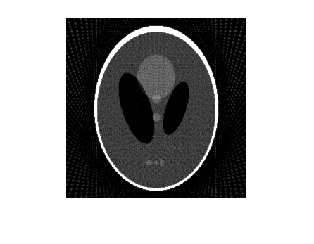
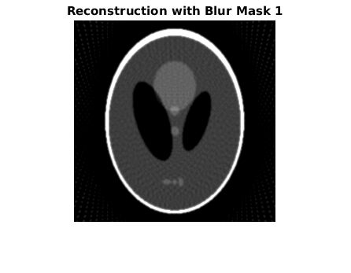
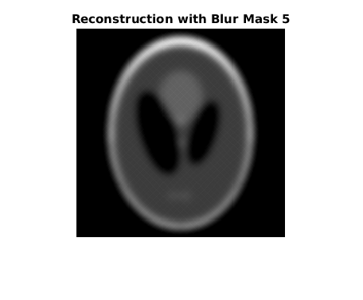
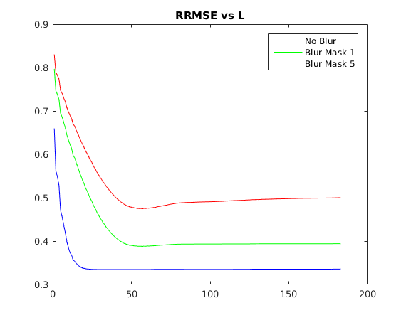

Contents
ph = phantom(256);
figure;
imshow(ph);
thetaVec = 0:3:177;
[R, t1] = radon(ph, thetaVec);
PART 1
RnewRL = zeros(size(R));
RnewSL = zeros(size(R));
RnewC = zeros(size(R));
for theta = 0 : 3 : 177,
Rin = R(:,theta/3 + 1);
RnewRL(:,theta/3 + 1) = myFilter(Rin, 1, 1);
RnewSL(:,theta/3 + 1) = myFilter(Rin, 1, 2);
RnewC(:,theta/3 + 1) = myFilter(Rin, 1, 3);
end;
figure;
iR = iradon(R , thetaVec, 'linear');
subplot(1,4,1), imshow((iR)), title('No Filter');
iR1 = 2*iradon(RnewRL, thetaVec, 'linear', 'none');
subplot(1,4,2), imshow(uint8(iR1)), title('RamLak L=w');
iR2 = 2*iradon(RnewSL, thetaVec, 'linear', 'none');
subplot(1,4,3), imshow(uint8(iR2)), title('SheepLogan L=w');
iR3 = 2*iradon(RnewC, thetaVec, 'linear', 'none');
subplot(1,4,4), imshow(uint8(iR3)), title('Cosine L=w');
for theta = 0 : 3 : 177,
Rin = R(:,theta/3 + 1);
RnewRL(:,theta/3 + 1) = myFilter(Rin, 2, 1);
RnewSL(:,theta/3 + 1) = myFilter(Rin, 2, 2);
RnewC(:,theta/3 + 1) = myFilter(Rin, 2, 3);
end;
figure;
iR = iradon(R , thetaVec, 'linear');
subplot(1,4,1), imshow((iR)), title('No Filter');
iR1 = 2*iradon(RnewRL, thetaVec, 'linear', 'none');
subplot(1,4,2), imshow(uint8(iR1)), title('RamLak L=w/2');
iR2 = 2*iradon(RnewSL, thetaVec, 'linear', 'none');
subplot(1,4,3), imshow(uint8(iR2)), title('SheepLogan L=w/2');
iR3 = 2*iradon(RnewC, thetaVec, 'linear', 'none');
subplot(1,4,4), imshow(uint8(iR3)), title('Cosine L=w/2');
PART 2
mask1 = fspecial('gaussian' , 11 , 1);
ph1 = conv2(ph, mask1, 'same');
mask5 = fspecial('gaussian' , 51 , 5);
ph5 = conv2(ph, mask5, 'same');
figure;
subplot(1,3,1), imshow((ph)), title('No Blur');
subplot(1,3,2), imshow((ph1)), title('Blur Mask 1');
subplot(1,3,3), imshow((ph5)), title('Blur Mask 5');
[Rr0 t] = radon(ph, thetaVec);
[Rr1 t] = radon(ph1, thetaVec);
[Rr5 t] = radon(ph5, thetaVec);
RnewRL0 = zeros(size(Rr0));
RnewRL1 = zeros(size(Rr0));
RnewRL5 = zeros(size(Rr0));
Rin = zeros(size(Rr0(:,1)));
for theta = 0 : 3 : 177,
Rin = Rr0(:,theta/3 + 1);
RnewRL0(:,theta/3 + 1) = myFilter(Rin, 1, 1);
end;
for theta = 0 : 3 : 177,
Rin = Rr1(:,theta/3 + 1);
RnewRL1(:,theta/3 + 1) = myFilter(Rin, 1, 1);
end;
for theta = 0 : 3 : 177,
Rin = Rr5(:,theta/3 + 1);
RnewRL5(:,theta/3 + 1) = myFilter(Rin, 1, 1);
end;
figure;
R0 = 2*iradon(RnewRL0, thetaVec, 'linear', 'none', 256);
imshow(uint8(R0));
title('Reconstruction with No Blur');
figure;
R1 = 2*iradon(RnewRL1, thetaVec, 'linear', 'none', 256);
imshow(uint8(R1));
title('Reconstruction with Blur Mask 1');
figure;
R5 = 2*iradon(RnewRL5, thetaVec, 'linear', 'none', 256);
imshow(uint8(R5));
title('Reconstruction with Blur Mask 5');
RRMSE0 = norm((R0/255 - ph), 'fro')/norm(ph, 'fro');
disp('RRMSE for No Gaussian Blur: ');
disp(RRMSE0);
RRMSE1 = norm((R1/255 - ph1), 'fro')/norm(ph1, 'fro');
disp('RRMSE for Gaussian Blur Mask 1: ');
disp(RRMSE1);
RRMSE5 = norm((R5/255 - ph5), 'fro')/norm(ph5, 'fro');
disp('RRMSE for Gaussian Blur Mask 5: ');
disp(RRMSE5);
PART 3
Rin = zeros(size(Rr0(:,1)));
RRMSE03 = zeros((size(Rr0,1) - 1)/2,1);
for l = 1:(size(Rr0,1) - 1)/2
for theta = 0 : 3 : 177,
Rin = Rr0(:,theta/3 + 1);
RnewRL0(:,theta/3 + 1) = myFilter(Rin, l, 4);
end;
R0 = 2*iradon(RnewRL0, thetaVec, 'linear', 'none', 256);
RRMSE03(l) = norm((R0/255 - ph), 'fro')/norm(ph, 'fro');
end;
figure;
plot(RRMSE03, 'r');
hold on;
Rin = zeros(size(Rr1(:,1)));
RRMSE13 = zeros((size(Rr1,1) - 1)/2,1);
for l = 1:(size(Rr1,1) - 1)/2
for theta = 0 : 3 : 177,
Rin = Rr1(:,theta/3 + 1);
RnewRL1(:,theta/3 + 1) = myFilter(Rin, l, 4);
end;
R1 = 2*iradon(RnewRL1, thetaVec, 'linear', 'none', 256);
RRMSE13(l) = norm((R1/255 - ph1), 'fro')/norm(ph1, 'fro');
end;
plot(RRMSE13, 'g');
Rin = zeros(size(Rr5(:,1)));
RRMSE53 = zeros((size(Rr5,1) - 1)/2,1);
for l = 1:(size(Rr5,1) - 1)/2
for theta = 0 : 3 : 177,
Rin = Rr5(:,theta/3 + 1);
RnewRL5(:,theta/3 + 1) = myFilter(Rin, l, 4);
end;
R5 = 2*iradon(RnewRL5, thetaVec, 'linear', 'none', 256);
RRMSE53(l) = norm((R5/255 - ph5), 'fro')/norm(ph5, 'fro');
end;
plot(RRMSE53, 'b');
legend('No Blur' , 'Blur Mask 1' , 'Blur Mask 5');
title('RRMSE vs L');
RRMSE for No Gaussian Blur:
0.5001
RRMSE for Gaussian Blur Mask 1:
0.3940
RRMSE for Gaussian Blur Mask 5:
0.3355
       